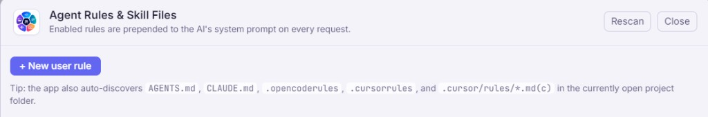

OpenRouter & Free Mode
Use any model available through OpenRouter, or enable Free Mode with the free router or round-robin over discovered free models. Optional fallback model if a free tier is rate-limited.
Desktop · MIT licensedv1.0
Open source on GitHub mfk0402/router-studio
Build with OpenRouter inside a real editor: Monaco, tabs and split view, a searchable model catalog, rules that follow your repo, an agent with tool approvals and a full terminal, Git and test panels, MCP hooks and webhooks — plus a local encrypted account vault for your API keys and settings. Everything runs on your machine; OpenRouter handles models and billing.
Scroll to glide the 3D previews through editor, models, chat, and terminal — screenshots stay in their frames.
Router Studio is MIT licensed and developed in public. Report issues, read the docs, and grab installers from the same place: github.com/mfk0402/router-studio.
Official binaries are published on GitHub Releases. Choose the artifact for your OS (Windows installer or portable zip, macOS dmg, Linux AppImage). You can also run from source with Node 20+ (see Docs).
NSIS installer plus zip from the latest release. After install, open Settings and add your OpenRouter key.
Get latest releaseDmg and zip targets. Allow the app in Gatekeeper if prompted; keys stay in the system keychain when supported.
Get latest releaseAppImage from releases. Make it executable, run, then pick a project folder and paste your API key.
Get latest releaseRouter Studio is an Electron desktop app: your project opens in a folder you choose, and your OpenRouter key stays on device. No cloud account is required for the core product. An optional Router Studio account (local vault) syncs encrypted settings between sessions on the same machine — see Account. Highlights below; the full map is under Capabilities.

AGENTS.md, .cursorrules,
and more) that join every request.
Use any model available through OpenRouter, or enable Free Mode with the free router or round-robin over discovered free models. Optional fallback model if a free tier is rate-limited.
Category sidebar (coding, vision, reasoning, free, large context, …), price tiers
Free/$/$$/$$$, sort by price or context, and quick
picks per category.
60+ languages, tabs, split editor, Format Document, Format on Save, Quick Open, and diff preview with backups before apply.
File explorer limited to the folder you trust. Path traversal is blocked; the AI only sees what you attach or what you send in a request.
Discovers AGENTS.md, CLAUDE.md, .cursorrules,
.cursor/rules, and more — toggle which rules join the system prompt.
Streaming chat with shortcuts and rich context; Agent mode runs a tool loop (files, git, shell, search, and more) with approvals. Streaming tool cards, tasks, memory, and sub-agents ship in-app — see Capabilities.
Attach images, stripped web pages, files, selections, tree snapshots, and paste — including drag-and-drop onto the panel.
Integrated xterm.js terminal; the agent uses run_shell and other tools under policies you set — not plain unapproved fenced blocks.
No first-party telemetry. Optional Router Studio account: encrypted vault on disk for settings and keys (not a cloud login). Optional email verification when your distributor configures a verify server. See Privacy.
The desktop app is the source of truth. This map aligns with the in-app Product roadmap (Help menu): shipped capabilities below, plus ongoing work in editor services, integrations, and MCP.
Browse categories — coding, vision, reasoning, fast, large context, free — filter by price tier, sort by cost or context, and jump to balanced picks per category.
In the app: sidebar categories, tier filters, sort, and one-click balanced picks per category.
Attach the current file, a selection, or the tree snapshot; add images for vision models and web pages fetched as stripped text.
Context-aware chat: the AI sees the snippets and files you attach — not your whole disk.
Add assets/media/chat.png for a dedicated chat backdrop and inline image here.
Safe diff preview with backups, inline edit widgets, and a bottom panel for problems, output, and shell — all in one cohesive chrome.
Ship safely: the agent can use run_shell and other tools with per-tool policies; you approve risky actions in the app. Review multi-file diffs before apply; Problems, output, and terminal share one bottom panel.
Router Studio talks to models through OpenRouter. You supply the API key; usage and billing follow OpenRouter’s plans — Router Studio does not charge per request.
sk-or-).
Developers can also clone the repository and run npm install and npm run dev — see the
README.
Documentation lives in the GitHub README (keyboard shortcuts, Free Mode, rules paths, building from source). Report bugs and request features on Issues.
Sign-in and registration happen in the desktop app. Your vault file lives under the app’s
user data folder on your machine — it is not a Cursor or OpenRouter account. When email verification is
enabled for your build (ROUTER_STUDIO_VERIFY_URL), registration matches the two-step flow below.
Minimum 8 characters. Used only to encrypt your vault on disk.
Minimum 8 characters. Used only to encrypt your vault on disk.